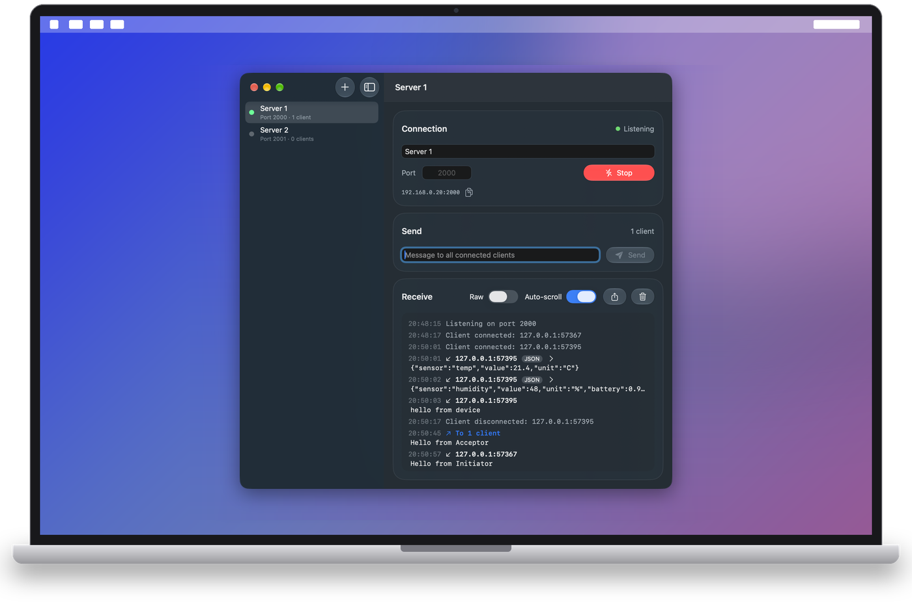
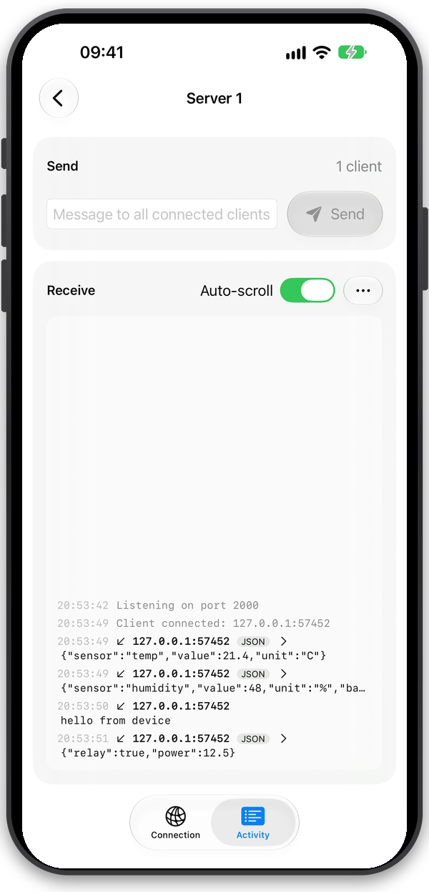

Acceptor
Host a TCP server on your Mac, iPhone or iPad. Accept clients and send and receive text messages.


About
Listen on a port, accept clients, and exchange text messages. A quick way to test clients and embedded devices. Available for Mac, iPhone and iPad.
Free and open source. View on GitHub. Also see Initiator.